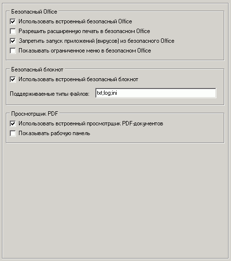

Наиболее важные опции на этой вкладке:
Безопасный Office
Для использования безопасных Word/Excel необходимо установить их из пакета MS Office, включить данную опцию и запускать winword.exe, excel.exe.
Поддерживаются: Office 2000/XP/2003 (только 32-битные версии!)
Просмотрщик PDF
Для работы данной утилиты необходим установленный Acrobat Reader версии 7.0 или выше